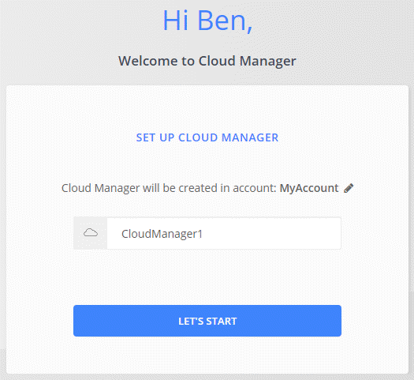

ドキュメントの変更をリクエスト
ドキュメントの変更をリクエスト GitHub で編集
GitHub で編集 寄稿者向けガイド
寄稿者向けガイドAzure Marketplace からコネクタを作成します
Cloud Manager からコネクタを直接作成することを推奨しますが、必要に応じて Azure Marketplace からコネクタを起動できます。Connector の作成とセットアップが完了すると、新しい作業環境を作成するときに、 Cloud Manager によって自動的に Connector が使用されます。
Azure でコネクタを作成する
Azure Marketplace のイメージを使用して Azure に Connector を導入し、コネクタにログインしてネットアップアカウントを指定します。
-
Azure MarketplaceのNetApp Connector VMのページに移動します。
-
[* Get it Now* ( 今すぐ取得 )] をクリックし、 [* Continue * ( 続行 )] をクリックします。
-
Azure ポータルで、 * Create * をクリックし、手順に従って仮想マシンを設定します。
VM を設定する際には、次の点に注意してください。
-
Cloud Manager は、 HDD または SSD ディスクのいずれかで最適なパフォーマンスを実現できます。
-
CPU と RAM の要件を満たす VM サイズを選択します。DS3 v2 を推奨します。
-
ネットワークセキュリティグループの場合、コネクタには、 SSH 、 HTTP 、および HTTPS を使用したインバウンド接続が必要です。
-
[* 管理（ * Management ） ] で、 [ * オン * （ * on * ） ] を選択して、コネクターに割り当てられた管理 ID * を有効にします。
管理対象の ID を使用すると、 Connector 仮想マシンはクレデンシャルを指定せずに自身を Azure Active Directory に識別できるため、この設定は重要です。 "Azure リソース用の管理対象 ID の詳細については、こちらをご覧ください"。
-
-
[* Review + create * （レビュー + 作成） ] ページで選択内容を確認し、 [* Create * （作成） ] をクリックして展開を開始します。
指定した設定で仮想マシンが展開されます。仮想マシンと Connector ソフトウェアが起動するまでの所要時間は約 5 分です。
-
Connector 仮想マシンに接続されているホストから Web ブラウザを開き、次の URL を入力します。
http://ipaddress:80[]
-
ログイン後、コネクタを設定します。
-
コネクタに関連付けるネットアップアカウントを指定します。
-
システムの名前を入力します。

-
これでコネクタがインストールされ、セットアップされました。Cloud Volumes ONTAP を Azure に導入するには、 Azure の権限を付与する必要があります。
Azure 権限を付与しています
Azure にコネクタを導入したら、を有効にしておく必要があります "システムによって割り当てられた管理 ID"。カスタムロールを作成し、そのロールを Connector 仮想マシンに割り当てて、 1 つ以上のサブスクリプションに必要な Azure 権限を付与する必要があります。
-
Cloud Manager ポリシーを使用してカスタムロールを作成します。
-
をダウンロードします "Cloud Manager Azure ポリシー"。
-
割り当て可能なスコープに Azure サブスクリプション ID を追加して、 JSON ファイルを変更します。
ユーザが Cloud Volumes ONTAP システムを作成する Azure サブスクリプションごとに ID を追加する必要があります。
-
例 *
「譲渡対象」：「 / 契約 / D333AF45-0D07-4154-943D-C25FBZZZZ 」、「 / 契約 / 契約 /54B91999-B3E6-4599-908E-416E0ZZZZ 」、「 / 契約 /E471C-3B42-4AE7-9B59-CE5BBZZZZ 」
-
-
JSON ファイルを使用して、 Azure でカスタムロールを作成します。
次の例は、 Azure CLI 2.0 を使用してカスタムロールを作成する方法を示しています。
「 AZ role definition create — role-definition C ： \Policy_for _cloud_Manager_azure_3.9.8.json
これで、 Connector 仮想マシンに割り当てることができる Cloud Manager Operator というカスタムロールが作成されます。
-
-
1 つ以上のサブスクリプションのロールを Connector 仮想マシンに割り当てます。
-
[ サブスクリプション ] サービスを開き、 Cloud Volumes ONTAP システムを展開するサブスクリプションを選択します。
-
* アクセス制御（ IAM ） * > * 追加 * > * 役割の割り当ての追加 * をクリックします。
-
[* 役割 ] タブで、 * Cloud Manager Operator * 役割を選択し、 * Next * をクリックします。

Cloud Manager Operator は、で指定されたデフォルトの名前です "Cloud Manager ポリシー"。ロールに別の名前を選択した場合は、代わりにその名前を選択します。 -
[* Members* （メンバー * ） ] タブで、次の手順を実行します。
-
* 管理対象 ID * へのアクセス権を割り当てます。
-
[ * メンバーの選択 * ] をクリックし、 Connector 仮想マシンが作成されたサブスクリプションを選択し、 [ * 仮想マシン * ] を選択してから、 Connector 仮想マシンを選択します。
-
[ * 選択 * ] をクリックします。
-
「 * 次へ * 」をクリックします。
-
-
[ レビュー + 割り当て（ Review + Assign ） ] をクリックします。
-
追加のサブスクリプションから Cloud Volumes ONTAP を導入する場合は、そのサブスクリプションに切り替えてから、これらの手順を繰り返します。
-
Connector には、パブリッククラウド環境内のリソースとプロセスを管理するために必要な権限が付与されました。Cloud Manager は、新しい作業環境の作成時にこのコネクタを自動的に使用します。ただし、コネクタが複数ある場合は、が必要です "スイッチを切り替えます"。